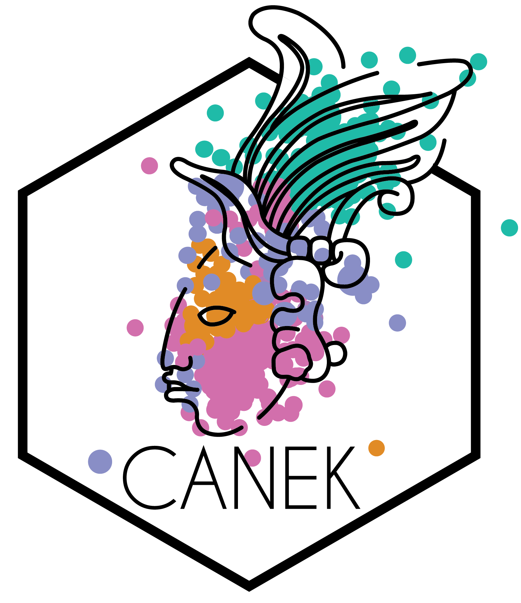
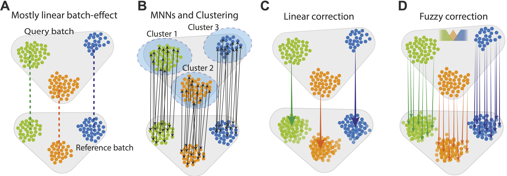

Canek is an R package to correct batch effects from single-cell RNA-seq biological replicates.
Motivation to develop Canek
As single-cell genomics technologies become mainstream, more laboratories will perform experiments under different conditions with biological replicates obtained using a common technology. In this scenario, integration of datasets with minimal impact on cell phenotype is essential.
The workflow
Canek leverages information from mutual nearest neighbor to combine local linear corrections with cell-specific non-linear corrections within a fuzzy logic framework.

A. Canek starts with a reference batch and query batch, assuming a predominantly linear batch effect.
B. Cell clusters are defined on the query batch and MNN pairs (arrows) are used to define batch effect observations.
C. The MNN pairs from each cluster are used to estimate cluster specific correction vectors. These vectors can be used to correct the batch effect or, (D) a non-linear correction can be applied by calculating cell-specific correction vectors using fuzzy logic.
Results
Canek was the highest scored method in tests specifically designed to assess over-correction, where Canek corrected batch effects without distortion to the structures of cells as compared with a gold standard.
For more information about Canek check out our manuscript in NAR Genomics and Bioinformatics:
Usage
You can use Canek directly with normalized-count matrices, Seurat objects or SingleCellExperiment objects. For more details, check out our GitHub page and vignettes:
Installation
You can install the release version of Canek from CRAN with:
You can install the development version from GitHub with:
# install.packages("remotes")
remotes::install_github("MartinLoza/Canek")Citation
If you use Canek in your research please cite our work using:
Loza M, Teraguchi S, Standley DM, Diez D (2022). “Unbiased integration of single cell transcriptome replicates.” NAR Genomics and Bioinformatics, 1(4), lqac022. doi: 10.1093/nargab/lqac022 (URL: https://doi.org/10.1093/nargab/lqac022).